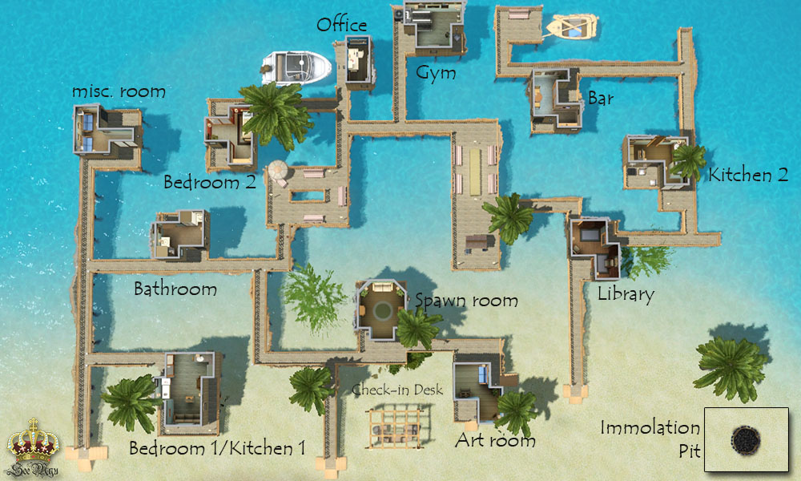

-Geneva 10/26/23
The Sims 3 is an expansive game that digs deeper than the sims 4. Sims are more complex with more trait options, favorite foods amd colors, astriological signs, and autonomy. In the Sims 3, you get to watch your sim go to workplace via taxi, carpool, or buying a car. Everything about it felt more real than the loading screens we see in the Sims 4. The expansion packs in The Sims 3 were deeper as well, packing enough content to mirror multiple Sims 4 packs combined. I was thinking of some examples. The Sims 3 nightlife includes skyscrapers, celebrities, and vampires all in one pack people can get for around $20. If you wanted The Sims 3 nightlife features in sims4 [vampires, celebrities] you would have to buy sims4 cityliving[$40], Vampires pack[$20] and get famous[$40]. That is My favorite pack is Island Paradise. In this DLC users can place their sims on houseboats, which are fully functional lots that they can drive. My favorite feature is the ability for users to design and manage their own resort. The creative capabilities in this were endless as it combined in-depth management and design like that of a tycoon game with the ability to play as the sims and make it feel real. Users could fire and hire workers, check their financial information, and decide even the small things like what food their buffetts would serve.
